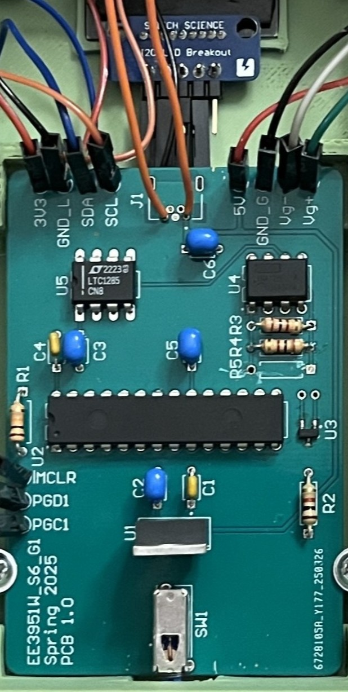
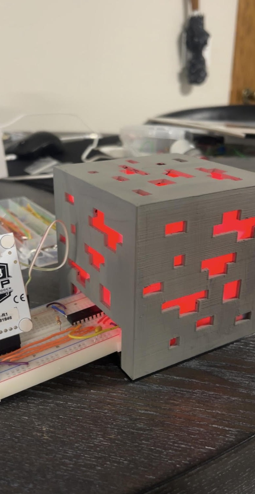
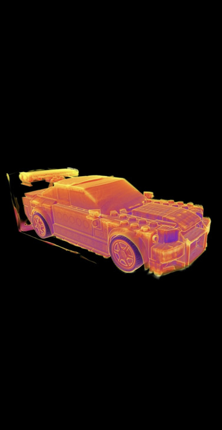

- SCOPE
- JUNIOR DESIGN GROUP PROJECT SPRING 2025
- BUILD WEIGHT SCALE 0G-1000G
- 10 BIT ADC, LCD, PIC24 MCU, DESIGN ANALOG CIRCUIT, AND PCB
- SKILL
- CODED SOFTWARE IN C TO IMPLEMENT ADC AND LCD FUNCTIONS
- TESTED ANALOG FRONT END CIRCUIT WITH INSTRUMENTATION AMP
- CHOSE HARDWARE BASED OFF DESIGN SPEC
- 3D MODELED PCB CASE
- COMPONENTS
- PIC24FJ64GA002
- INA128PA
- LM2937
- ADR510ARTZ-REEL7
- LTC1285CN8#PBF
- 1528-4543-ND

- SCOPE
- SOPOMORE MICROCONTROLLERS GROUP PROJECT SPRING 2024
- COLOR CHANGING NIGHT LIGHT BASED ON AMBIENT LIGHT READINGS
- MUSIC PLAYER BASED ON AMBIENT LIGHT READINGS
- PIC24 MCU, 3D PRINTING, PROGRAMMABLE LEDS, BUZZER
- SKILL
- CODED SOFTWARE IN C TO IMPLEMENT BUZZER FUNCTIONS AND LIBRARY, CODED LED LOGIC AND LIBRARIES
- LIBRARIES INCLUDED 8 SONGS FOR A BUZZER WITH PRECISE PITCH CONTROL (30HZ TO 5000HZ) USING PWM AND TIMERS
- DESIGNED AND INTEGRATED CIRUCUITRY FOR THE BUZZER, LEDS, AND LIGHT SENSOR
- 3D PRINTED NIGHT LIGHT CASE
- COMPONENTS
- PIC24FJ64GA002
- PIEZO BUZZER - PS1240
- ADAFRUIT NEOPIXEL 5MM LEDS

- SCOPE
- AUGUST 2024 ELECTRICAL ENGINEERING INTERN
- CHARACTERIZE MEASUREMENT DATA TAKEN ON X-RAY MACHINES
- CONDUCT EXPERIMENTS AND ANALYZE DATA
- CONTRIBUTIONS
- RESEARCHED AND IDENTIFIED KEY FACTORS IN CT SCAN MEASUREMENT VARIATIONS, ENHANCING GEOMETRY SCAN CONSISTENCY
- CONDUCTED 2-FACTOR DOE ON OBJECT POSITIONING AND CT SETTINGS, CONFIRMING BOTH SIGNIFICANTLY IMPACT SCAN ACCURACY
- BUILT AN ADVANCED EXCEL TOOL WITH POWER QUERY, AND VISUAL BASIC MACROS WHICH MANAGED LARGE DATASETS
- SKILL
- EXCEL
- DATA ANALYSIS
- NON DESTRUCTIVE TESTING

- SCOPE
- CREATE HANDHELD RETRO GAMING DEVICE USING A RPI 3 A+
- DESIGN CASE AND CONTROLLER GPIO CONFIGURATIONS
- CONTRIBUTIONS
- IN PROGRESS
- IN PROGRESS
- IN PROGRESS
- SKILL
- SOLDERING
- CIRCUIT DESIGN
- CAD